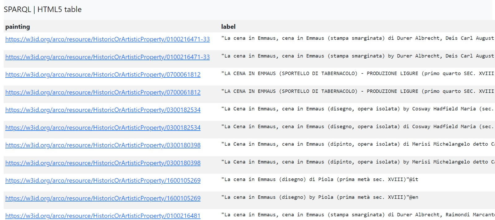
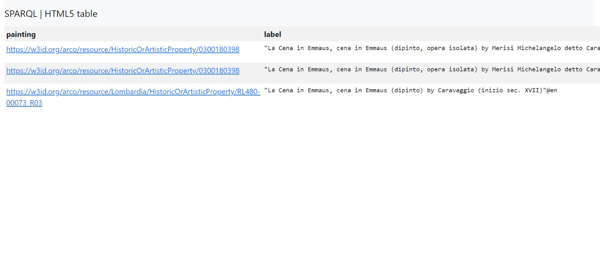
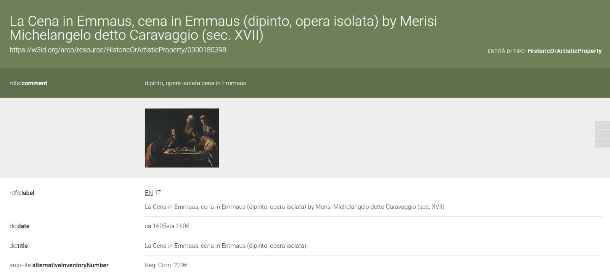

PREFIX rdfs: http://www.w3.org/2000/01/rdf-schema#
PREFIX arco: https://w3id.org/arco/ontology/arco/
SELECT DISTINCT ?painting ?label
WHERE {
?painting a arco:HistoricOrArtisticProperty ;
rdfs:label ?label .
FILTER(REGEX(?label, "la cena in emmaus", "i"))
}
LIMIT 100
La Cena in Emmaus

I chose the painting called Supper in Emmaus. First, I try to find it in the ARCO ontology using only the name:
Query 1
Result 1

If we write only the name of the painting, there are too many results, because there are multiple different works with the same name.
So I narrow it down by adding the author, Caravaggio, and language of the page - English
Query 2
PREFIX rdfs: http://www.w3.org/2000/01/rdf-schema#
PREFIX a-cd: https://w3id.org/arco/ontology/context-description/
SELECT DISTINCT ?painting ?label ?authorName
WHERE {
?painting rdfs:label ?label ;
a-cd:hasAuthor ?author .
?author rdfs:label ?authorName .
FILTER(regex(?label, "la cena in emmaus", "i"))
FILTER(regex(?authorName, "caravaggio", "i"))
FILTER(lang(?label) = "en")
}
LIMIT 10
Result 2

The result of the query is pretty good, it gives only three links. One of them has the author name just Caravaggio, while the other two have Merisi Michelangelo Detto Caravaggio
